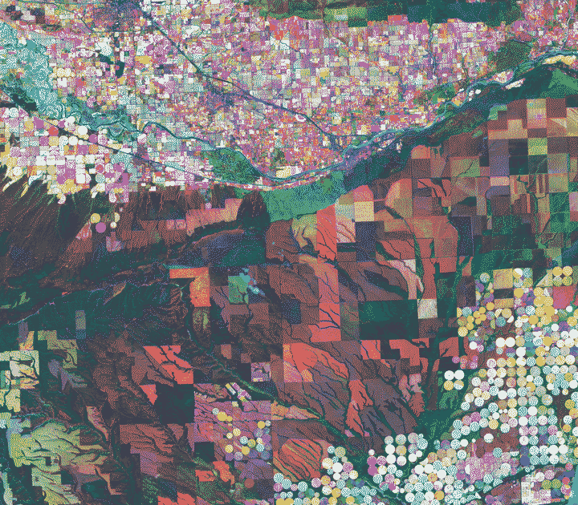
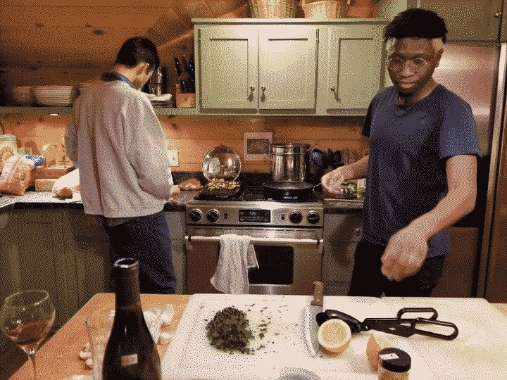

Two Years In - How We Work at Upstream
 Obviously my desktop background…
Ah yes, the unflappable entrepreneur: knowing from Day 1 that their business will last decades — nay a century! Not I.
If you told me, approximately two years ago, that Upstream would not only last two years, but continually gain momentum I’d respond “of course, of course!” but my stomach would ache with uncertainty. Alden and I were, after all, {an appeal for impact} (we still are — check back in a few decades).
Our thesis is this: It is possible for folks in our line of work to make a living working on something that also has positive social and environmental returns.
It’s sort of like the “triple bottom line” of investing (financial, social and environmental returns), but for day-to-day work. There are, of course professions where this is the default: teaching, social work, activism, journalism, etc. In our case we were looking specifically at technology’s role. And so far, so good! 2 years in, we’re working with some of the most incredible conservation groups, growing the team, and learning from some of the brightest folks in this line of work. We’ve also {upstream joins natel energy, joined Natel Energy}, which has opened many new doors and allowed us the stability to take greater risks.
It seemed appropriate at this milestone to reflect a bit, not just on how we started, but how we work — the minutia that make the day-to-day successful. Did I mention we are a remote team? Some of this may be obvious, all of it can be improved, but here is a glimpse into how we work:
Morning intentions
I mentioned this above with #upstream-intentions. Part of how we kick off our day is with a group video chat hitting a few important items for each team member:
- How did yesterday go?
- What’s the plan for today?
- Do you need anyone’s help?
!(img/how-we-work-2.png)
#upstream-intentions
It’s a pretty basic framework that keeps morning meetings concise and thoughtful. There have been plenty of occasions where someone may be wrapping a big effort up and isn’t sure what the next best thing is to work on. In those cases we look at current and prospective partners and hash out what might be the highest value next work.
Upstream IRL
I’m a strong believer in the power and potential of remote work for the right team. However, there are always some things that are better done in person. Take cooking together, for example.
 Amadou and Alden cook up the world’s tastiest pasta from scratch.
Team bonding and long term planning are two such items for our team. Once a quarter, we pick a location and meet up in person. Sometimes it’s San Francisco at Natel Energy’s office. I’ve hosted in Somerville. Most recently, we rented an Airbnb in the Berkshires for a contemplative, hiking and cooking-filled week together. Business plans we had talked about for ages clicked in new ways. Technical scopes coalesced in turn. We left the week with a renewed energy (renewable energy?!), a stronger bond and a clear path forward with our work.
1-on-1s
We all do 1-on-1s with one another on a regular basis. We try not to reschedule or push back. They’re important! Informal phone calls while on walks or video chats. Simple, but possibly the most important time for communicating with your remote teammates.
Show and tell
I’ve worked at companies where there is a set “Show and Tell” slot on the calendar. It works great for large teams. Since we are small (and remote), we try to have a constant show and tell: do something neat over the weekend? Put it in slack! New screenshots of the prettier graphs you’re developing? ⌘V! Want to do a video walkthrough of a surprisingly accurate ML model? Drop a hangout link and show us. Constant sharing and celebration of work has made it just as exciting as running over to someone’s desk, and is far more inclusive.
!(img/how-we-work-9.png)
It’s been an awesome few years, and I’m excited for many more to come. I’m sure most of how we work is par for the startup course these days, but I hope for some, it’s an interesting look into our daily routine.
And obligatorily: if the way we work sounds fun and our mission resonates, our team is hiring)! Send me a message at marshall@upstream.tech 🙋